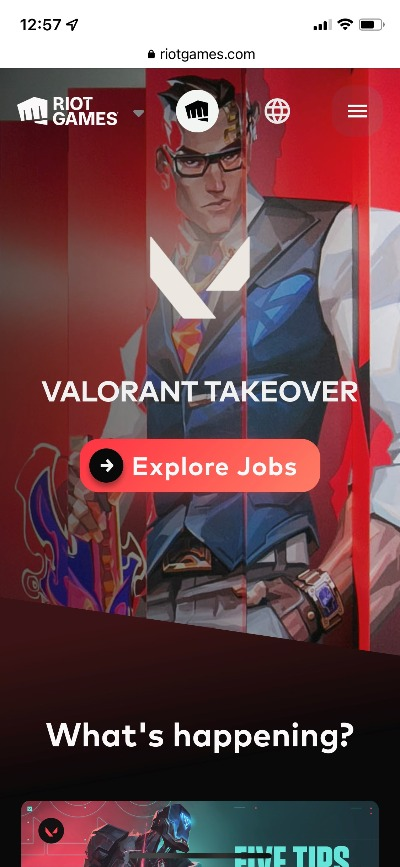
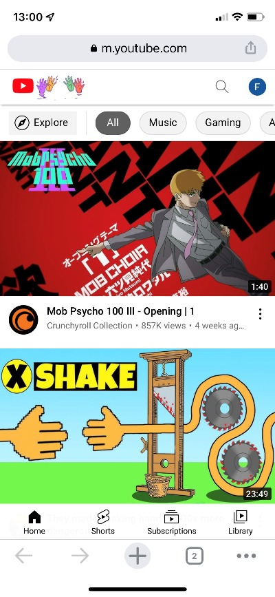

White Space and Clean Design
Riot Games
riotgames.com
Riot Games utilized White Space and Clean Design to achieve an engaging interface with a clear purpose. It's use of white space between the navigation bar and the call to action button allows the user to rest the eyes from the white titles and it creates a big contrast that leads the viewers eyes to the call to action button.
Fitt's Law
Amazon
amazon.com
Describe principle utilized by site
Visual Hierarchy
Youtube
youtube.com Describe principle utilized by site